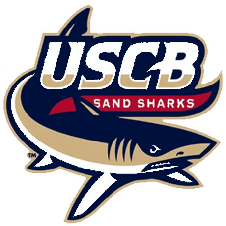

About Robert Currall
I am currently a student at the University of South Carolina Beaufort where I am studying Computational Science. I enrolled in USCB in the fall of 2016 and have started my second semester, currently holding a 4.0 institutional GPA.
Before I attended USCB I was a student at Coastal Carolina University from the fall of 2011 to the spring of 2015, at which point I made the move from Myrtle Beach and began the enrollment process at USCB. I studied Applied Mathematics at CCU but after taking a couple of computer science courses and then a course in cryptography I realized that I was in the wrong major and that computers were my passion.
Education
I am currently enrolled at the University of South Carolina, Beaufort. I transfered from Coastal Carolina University which I atteneded from the Fall of 2011 to the Spring of 2015. While at CCU, I studied Applied Mathematics and Pre-engineering. After taking a break for a year, I applied to USCB and began studying Computational Science. Here are some of the more notable courses I've taken and what they have encompassed.
University of South Carolina - Beaufort
- CSCI B102 - General Applications Programming HTML & JavaScript
- Introduction to systematic computer problem-solving and programming for a variety of applications. Open to all majors.
- CSCI B145 - Java Programming Algorithmic Design I
- Problem solving, algorithmic design and programming. Three lectures and two laboratory hours per week. Open to all majors.
- CSCI B320 - Database Systems Management
- Provides foundations of database systems for students with little prior database experience; topics include relational algebra, data models, schema design and normalization, storage management, query, transaction, concurrency control and consistency
Coastal Carolina University
- MATH 348 - Rubik's Cube Mathematics
- Analysis of group theory and permutation puzzles. Uses group theory to find tools to solve puzzles like the Rubik's cube and using the Rubik's cube to illustrate important topics in group theory.
- MATH 408 - Cryptography
- Classical, public-key, and symmetric-key cryptosystems. Basic number theory. Digital signature schemes. Applications to information assurance and cyber security.
- MATH 452 - Complex Variables
- The course covers the basic principles (both theory and applications) of differentiable complex-valued functions of a single complex variable. Topics include the complex number system, Cauchy-Riemann conditions, analytic functions and their properties, special analytic functions including linear fractional transformations, roots, exponential, Log, trigonmetric and hyperbolic functions of a complex variable; Complex integration and line integrals, Cauchy's theorem, Cauchy represenation, conformal mapping, Taylor and Laurent Series expansions; the calculus of residues and various applications.
- ENGR 101 - Introduction to Engineering
- This course introduces students to the science of engineering through design and practice. Emphasis is placed on the synthesis of knowledge, skills and the methodologies that are the essential to all types of engineering professions. The course is structured to integrate core scientific foundations into an engineering perspective through the use of team-based projects, analytical tools and technical communications.
Work Experience
My employment history largely encompasses work in the customer service industry, as well as some experience in construction.
Electronics Sales Associate - Walmart
November 2016 to Present
Description:
Described merchandise and explain operation of merchandise to customers. Placed special orders
and called other stores to find desired items.Operated a cash register to process cash, check and
credit card transactions. Recommended merchandise based on customer needs. Explained information
about the quality, value and style of products to Influence customer buying decisions.
Electronics Sales Associate - Best Buy
June 2016 to November 2016
Description:
Described merchandise and explain operation of merchandise to customers. Placed special orders
and called other stores to find desired items.Operated a cash register to process cash, check and
credit card transactions. Recommended merchandise based on customer needs. Explained information
about the quality, value and style of products to Influence customer buying decisions.
Reason for leaving:
The location that I was hired at was shutdown shortly after I was hired.
I stayed with the store until it's last day of operation, and even closing down the store on the final
day.
Patient Attendant - Conway Medical Center
November 2014 to June 2016
Description:
The Patient Assistant/Sitter works under the direction of the Nurse Manager and under the
direct supervision of the Professional Registered Nurse or delegated Licensed Practical Nurse as a Nurse
Aide I (NA I) or Psych Tech, to observe a patient for harmful and/or dangerous behaviors. This position
is an important component of the continuum of care as is provided to maintain the safety and protect the
well-being of patients at-risk for injury. The observation and care activities are individualized for
each patient at the direction the medical staff. The Patient Personal Care Assistant/ Sitter is also
responsible for completing a variety of departmental specific tasks to assist with optimal department
safety and functioning
Reason for leaving:
I transfered schools, from Coastal Carolina University in Conway, SC to USC Beaufort in Beaufort, SC.
Awards
For my first semester at USCB I took a class on HTML web developement, Java programming, and database system management. For my HTML and Java classes there was a competition for the final project. In the HTML class each student was to build a personal website about themselves. For this competition I tied for second place, here is the submission I presented for the project, I modified the code from the project to create this website.
For the competition in the Java class, students were to create a video game in the Greenfoot IDE that was based on Spanish culture. In this competition I tied for third place, here is a link to the submission. For my video game I attempted to create a Civilization-like game based on the settlement of Santa Elena on modern-day Parris Island.